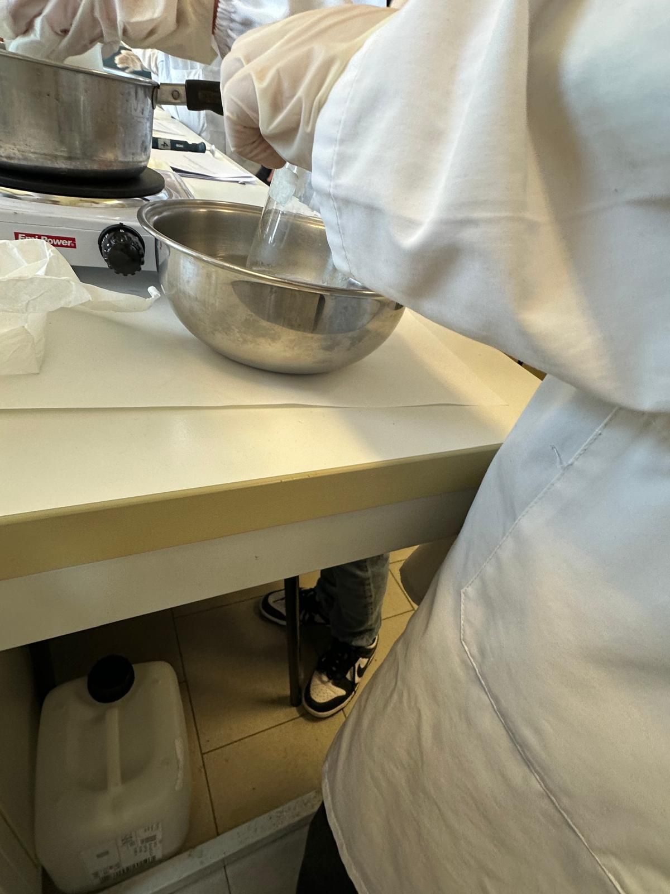
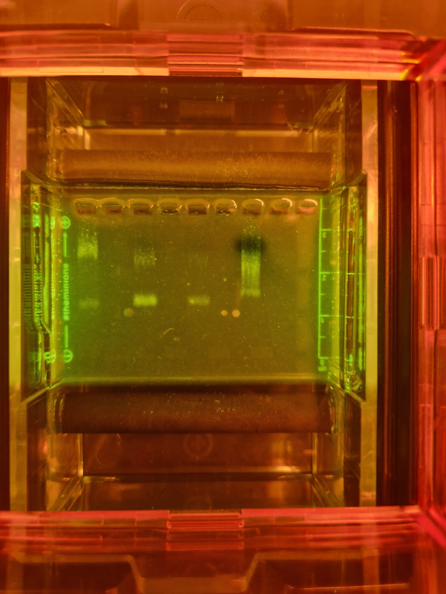
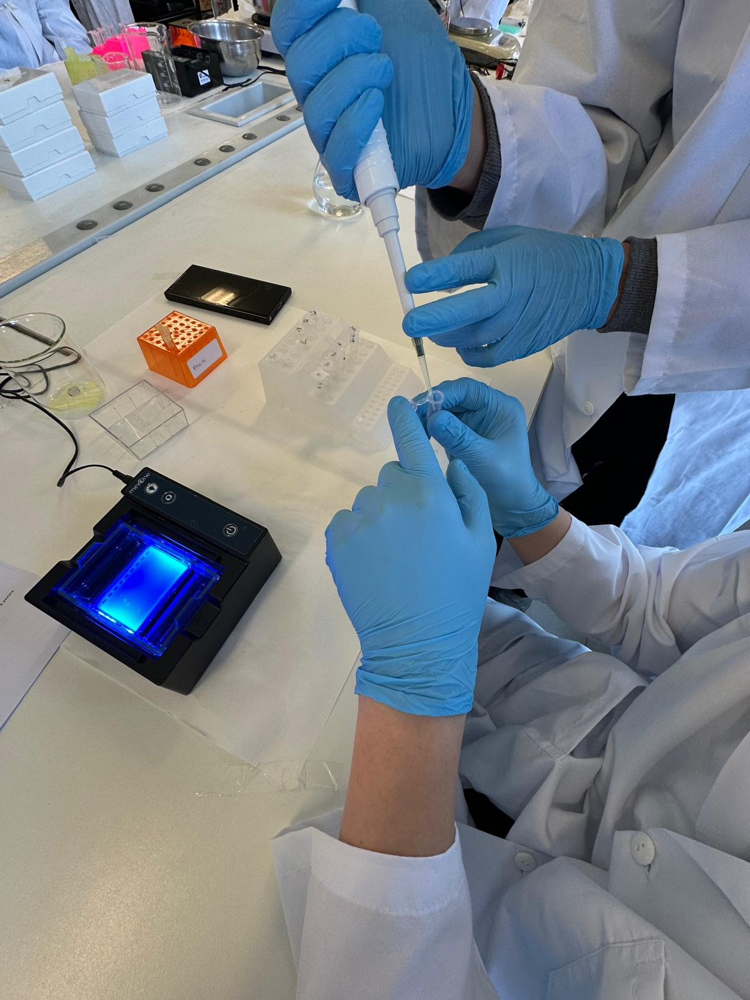
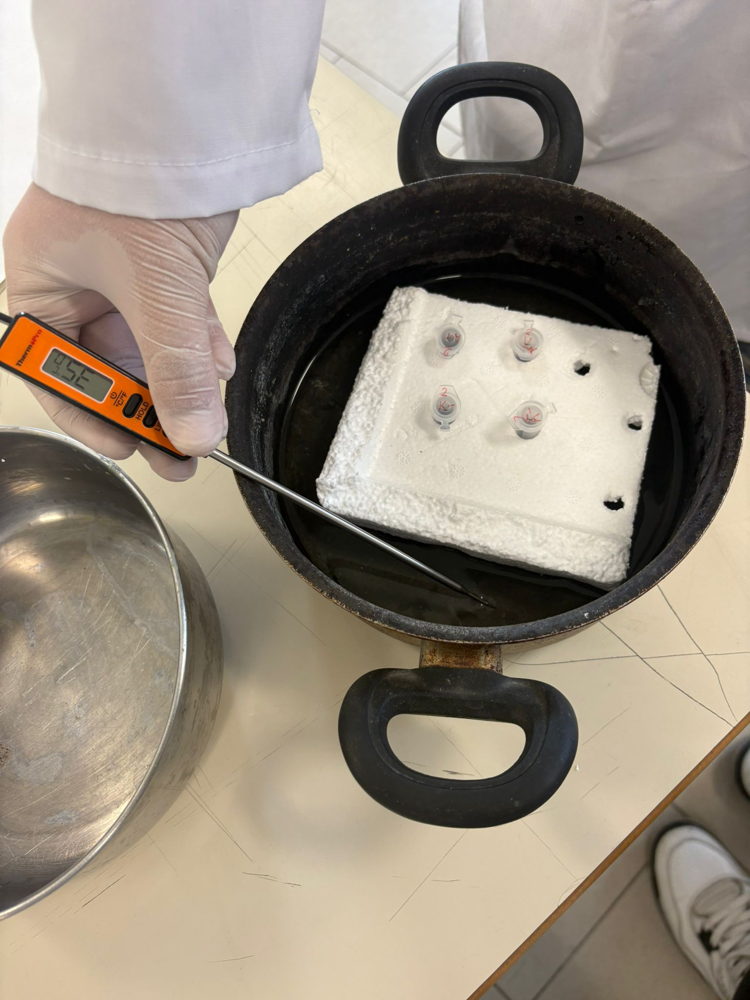
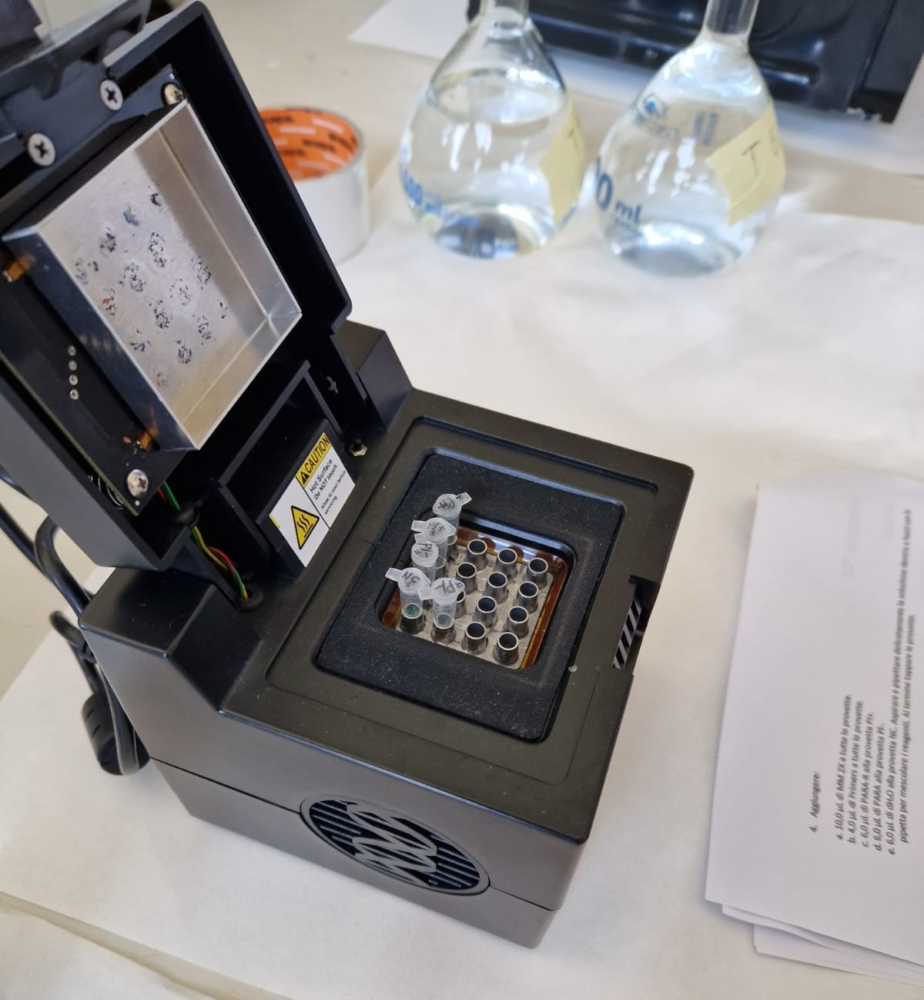
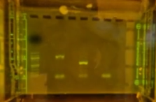

Primo FSL
Cittadinanza digitale internet of things
Il primo percorso di FSL ha offerto un'importante opportunità di crescita sia sul piano delle competenze digitali sia su quello dell'orientamento al futuro percorso di studi. Tra le diverse tappe formative e i laboratori teorico-pratici svolti, due esperienze in particolare hanno rappresentato i pilastri del progetto per il loro valore formativo e orientativo.
Formazione Tecnologica e Cittadinanza Digitale
Il percorso ha preso il via con una solida base teorica dedicata alla Teoria IoT (Internet of Things). In questa fase sono stati appresi i concetti fondamentali sui dispositivi connessi e sulla gestione dei dati. Successivamente, queste nozioni sono state applicate nell'elaborazione di una presentazione multimediale.
Giornata di Orientamento presso il Campus dell'Università di Salerno (Unisa)
L'esperienza si è conclusa con una giornata di orientamento universitario presso l'Università degli Studi di Salerno. Gli studenti hanno potuto visitare le strutture del Campus, comprendendo l'offerta formativa post-diploma.
Secondo FSL
ABE-AMGEN BIOTECH EXPERIENCE
Il secondo percorso FSL era invece incentrato sulle tecniche di biotecnologie, in particolar modo la pcr e l'elettroforesi su gel. Questa esperienza ha permesso di sviluppare la conoscenza delle tecniche di laboratorio e degli strumenti usati, la lettura dei risultati sperimentali e il collegamento tra teoria e pratica.
Il gel di agarosio
Il gel di agarosio è un materiale ottenuto da polisaccaridi estratti dalle alghe marine. Viene sciolto a caldo in tampone TBE e versato in uno stampo dove solidifica formando una matrice porosa. Il gel funziona come un "setaccio molecolare": i frammenti piccoli si muovono più velocemente, mentre i frammenti grandi vengono rallentati. Questo permette la separazione delle molecole in base alla dimensione.

Elettroforesi
L'elettroforesi è una tecnica che sfrutta un campo elettrico per far migrare molecole cariche all'interno di un gel. Permette di confrontare campioni di DNA, verificare tagli enzimatici, controllare prodotti PCR e identificare frammenti di diversa lunghezza.

I plasmidi
I plasmidi sono piccole molecole circolari di DNA presenti nei batteri, vengono utilizzati in biotecnologia come vettori genetici, cioè strumenti capaci di trasportare geni. Nel laboratorio sono stati utilizzati plasmidi come PKAN-R e PARA. Gli enzimi di restrizione sono "forbici molecolari" che riconoscono specifiche sequenze di DNA e le tagliano, permettendo di aprire il plasmide, isolare frammenti di DNA, creare estremità compatibili e preparare il DNA alla ricombinazione.

Terzo FSL
Orientiamo il futuro-Federico II
Il terzo percorso di FSL prevedeva una serie di webinar su vari argomenti legati all'informatica e al digitale, come l'"Internet of Things" e le applicazioni dell'Intelligenza Artificiale. Questi eventi sono stati organizzati dall'Università Federico II di Napoli.
Orizzonti Campus D
Abbiamo anche partecipato a una serie di incontri presso la sede di Monte Sant'Angelo dell'Università Federico II, durante i quali abbiamo visitato i dipartimenti di Biologia e Chimica. Questa esperienza ci ha dato l'opportunità di esplorare da vicino ulteriori possibilità dopo il diploma.
Attività di Laboratorio
In quest'ultimo anno abbiamo svolto anche attività di laboratorio focalizzate su:
- digestione con enzimi di restrizione e costruzione del plasmide PARA-R;
- visualizzazione della restrizione enzimatica mediante elettroforesi su gel di agarosio;
- amplificazione mediante PCR e visualizzazione con elettroforesi.
Digestione dei plasmidi
I plasmidi sono piccole molecole circolari di DNA presenti nei batteri e usate come vettori genetici. Gli enzimi di restrizione agiscono come forbici molecolari, riconoscendo specifiche sequenze di basi e tagliando il DNA in punti precisi. Questo permette di aprire il plasmide, isolare frammenti di DNA e preparare il materiale per la ligazione.

PCR
La PCR è una tecnica che permette di amplificare milioni di copie di una specifica sequenza di DNA. In questo caso il termociclatore è stato impostato secondo il protocollo tecnico:
| Step | Temp. | Tempo | Cicli |
|---|---|---|---|
| Initial denaturation | 95°C | 360 s | 1 |
| Denaturation | 95°C | 30 s | 35 |
| Annealing | 58°C | 30 s | |
| Extension | 68°C | 60 s | |
| Final extension | 68°C | 300 s | 1 |
| Final incubation | 4°C | 00 s | 1 |

Lettura dei risultati
Campioni caricati nel gel: Marker (riferimento di dimensione), PL+ (plasmide non digerito amplificato), PL- (plasmide digerito amplificato) e NC (controllo negativo).
